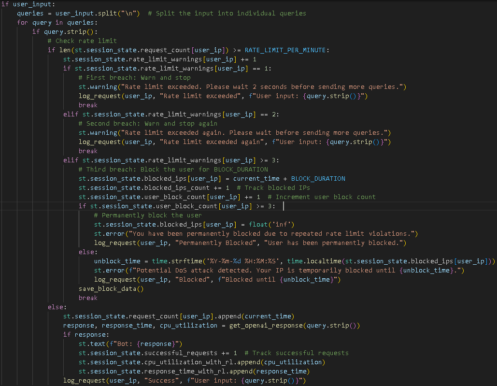
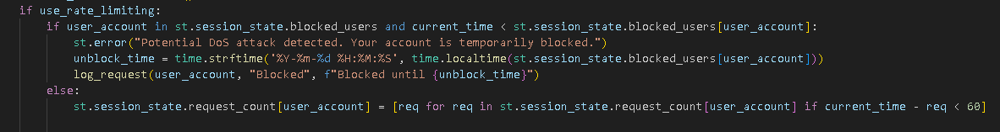
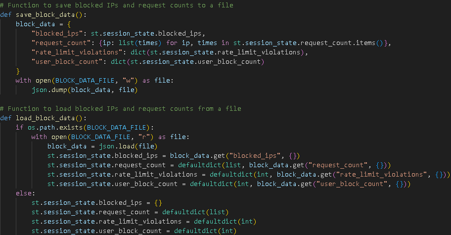
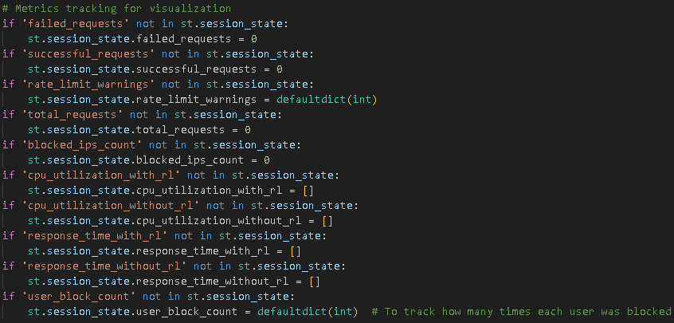
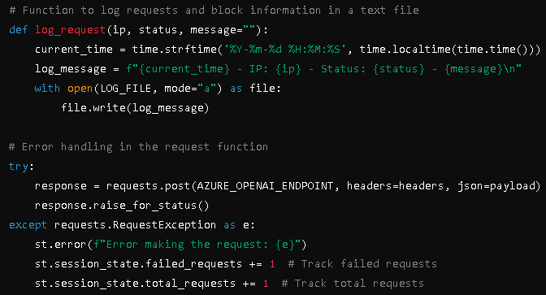

What is a DoS Attack on Chatbots?
A Denial of Service (DoS) attack aims to overload a chatbot system by flooding it with requests, exhausting resources, and making it unresponsive to legitimate users. Attackers exploit this by sending numerous or high-resource requests, resulting in delayed responses or system crashes.
DoS Attack Examples Targeting Chatbots
- HTTP Flooding: Overloading the server with excessive HTTP requests.
- UDP Amplification: Using open servers to magnify and direct network traffic toward the chatbot.
- Slowloris Attack: Keeping connections open to exhaust available resources.
Solution: Implementing Rate Limiting, IP Blocking, and DoS Detection
-
Rate Limiting:
- Limits requests to a set maximum (RATE_LIMIT_PER_MINUTE) per IP within a 60-second period.
- Users receive warnings as they near the limit, with temporary blocking for excessive requests, and permanent blocking after multiple violations.
This code checks if the user's IP address is currently blocked due to exceeding the rate limit. If the user is blocked, an error message is displayed, informing them of the temporary restriction.
-
IP-Based DoS Protection:
- Tracks user IPs to differentiate between legitimate users and potential attackers, blocking IPs that abuse the system.
This line cleans up old request timestamps older than 60 seconds for the user's IP address. This helps in tracking the number of requests made by the user within the rate limiting window.
-
Persistent Block and Rate Limit Data:
- Saves blocked IPs and request counts in block_data.json to maintain states even after application restarts, preventing flagged IPs from bypassing restrictions.
This code snippet saves the blocked IPs and their request counts to a JSON file. This persistence allows the system to remember blocked users even after the application is restarted.
-
Metrics Tracking for Incident Response:
- Tracks blocking counts for each IP, CPU usage, and response times.
- Abnormal metrics can indicate a DoS attack or performance issues.
This line increments the total requests counter whenever a request is successfully processed. This metric can help in monitoring usage patterns and detecting anomalies.
-
Error Handling and Logging:
- Logs each request, including violations, in request_logs.txt for auditing.
- Logs include IP actions and timestamps for effective monitoring and debugging.
This code appends log messages about user requests and their statuses (successes, errors, or blocks) to a log file. This logging is crucial for monitoring system behavior and diagnosing issues.
For full code implementation, view the code below: